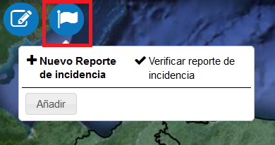
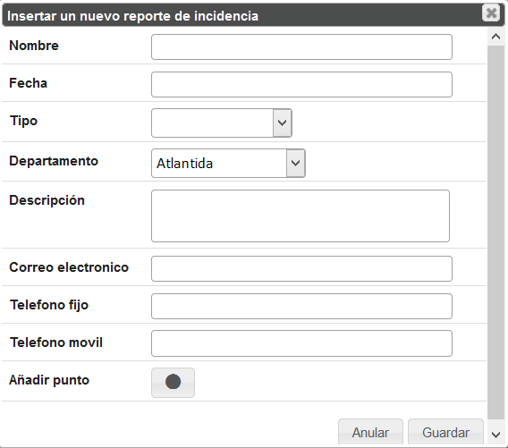
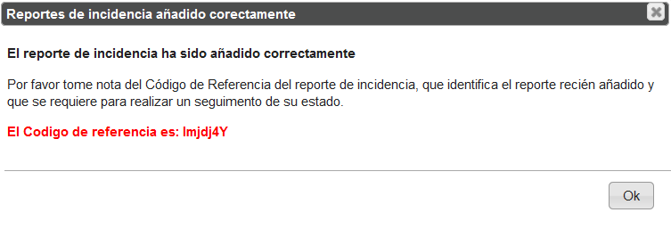
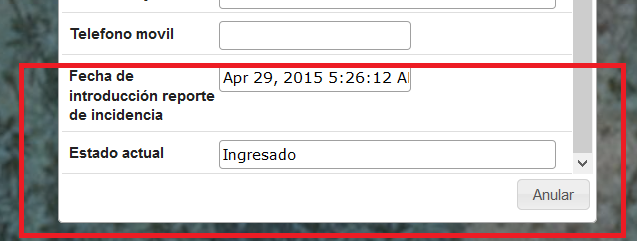
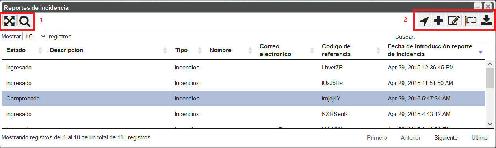

La herramienta Reportes de Incidencia presenta diferentes herramientas de acuerdo con el tipo de usuario:
Los roles están definidos por el usuario autorizado (p.e. Administrador del Sistema) a través la aplicación Panel de Administración. Los usuarios del GeoPortal pueden averiguar su tipo de rol mandando un correo a través el servicio Contáctenos presente en la Barra de Accesibilidad.
La herramienta básicamente permite a todos los usuarios de registrar un Reporte de Incidencia y seguir su procesamiento.
Si la inserción de un Reporte de Incidencia cae afuera de los confines terrestres nacionales, el Geoportal muestra
un mensaje de error.
Los usuarios autenticados pueden acceder a un panel con herramientas específicas, para manejar los Reportes de Incidencias insertados, verificar su conformidad, y finalmente aprobarlos o rechazarlos.
Los usuarios autenticados pueden acceder a las herramientas específicas en respecto al rol de autorización: los Administradores del Sistema detienen el control total sobre todos los Reportes de Incidencia mientras los Administradores Regionales solo sobre los elementos que pertenecen a su Departamento.
Usuario Público
El usuario público tiene a su disposición dos herramientas:

Herramienta Reporte de Incidencia
Al pulsar el botón Añadir, el usuario puede insertar algunas informaciones a través del siguiente formulario:

Formulario de Entrada de datos para un nuevo Reporte de incidencia
Los campos “Tipo” y “Departamento” son obligatorios, los otros facultativos.
Al pulsar el botón Añadir punto, el usuario puede insertar en el mapa su Reporte de Incidencia.
Todos los campos obligatorios tienen que ser rellenados para que el Reporte de incidencia sea ingresado, si no el sistema muestra un mensaje de error.
Si el punto añadido no está incluido en el departamento insertado en el formulario, también el sistema muestra un mensaje de error.
Si el Reporte de Incidencia está correctamente ingresado, el sistema proporciona al usuario un Código de
Referencia que identifica de forma exclusiva el Reporte de incidencia para verificar su seguimiento.

Código de referencia Reporte de Incidencia
Al pulsar el botón “Verificar Reporte de Incidencia”, en la Barra de Herramienta Reporte de Incidencia, insertando este código se visualiza el formulario con los detalles del Reporte de Incidencia, con dos campos más: Fecha de Introducción y Estado Actual.

Visualizacion Formulario Reporte de Incidencia
A la inserción, el valor del Estado Actual es predefinido como Ingresado. Durante el seguimiento del Reporte de Incidencia, los usuarios autorizados pueden modificar este estado: En Seguimiento, Comprobado, Rechazado.
Usuario Administrador del Sistema
El usuario con rol Administrador del Sistema puede ejecutar operaciones específicas que no están disponibles en el utilizo estándar del sistema:
Visualización en el mapa
Los usuarios autenticados y autorizados pueden visualizar en el mapa todos los Reportes de Incidencia insertados, simbolizados con colores diferentes en respecto al estado actual: Ingresado, En Seguimiento, Comprobado, Rechazado.
Gestión
A través de un específico Panel de Gestión Reportes de Incidencia, los usuarios autorizados pueden manejar los Reportes de Incidencia insertados, utilizando herramientas específicas

Panel de Gestión Reportes de Incidencia
El panel visualiza la lista de todos los Reportes de incidencia insertados (10 cada página) con los relativos detalles, incluido el Estado actual y la Fecha de introducción.
Además, el panel contiene dos barras con herramientas específicas.
La barra a la izquierda (1) presenta herramientas para ejecutar funciones de navegación:
La barra a la derecha (2) presenta herramientas para ejecutar funciones como:
La herramienta Añadir Reporte de Incidencia funciona como en el caso del usuario estándar, con la diferencia que todos los campos son obligatorios.
Además hay la posibilidad de insertar notas para el beneficio del usuario.
Usuario Administrador Regional
El usuario con rol Administrador Regional puede ejecutar todas las operaciones específicas definidas por el Administrador del Sistema pero solo puede manejar los Reportes de Incidencia de su Departamento.
Resumiendo, este usuario puede: